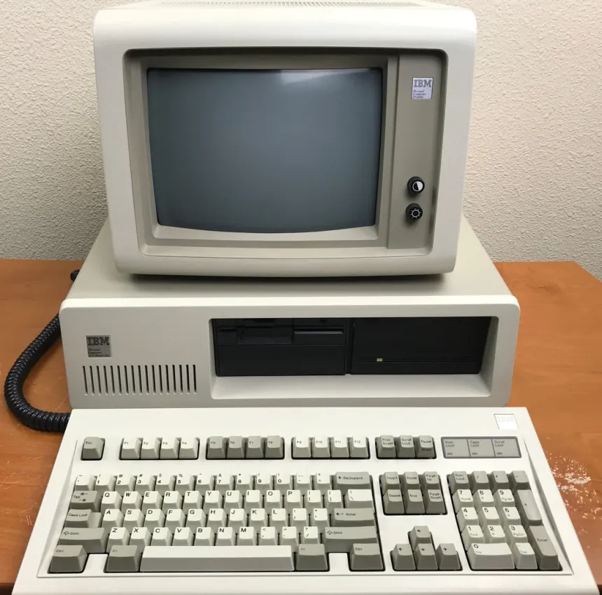
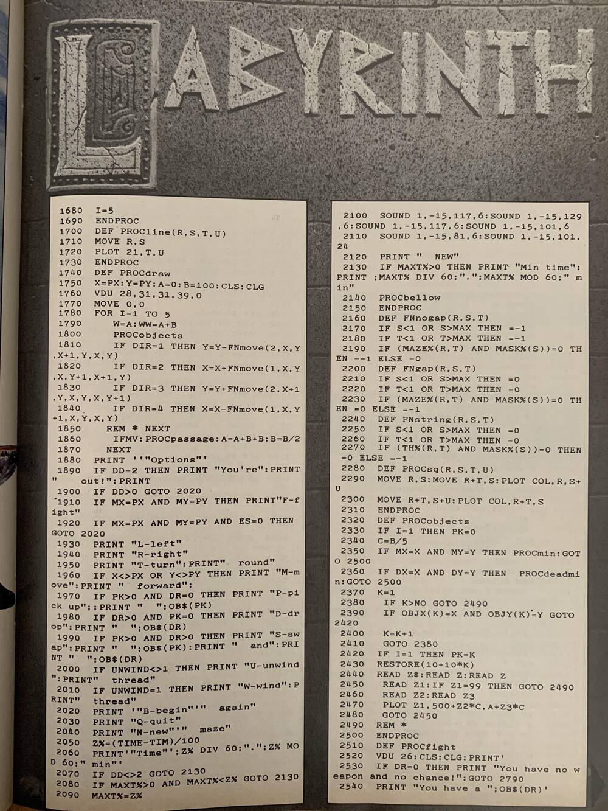
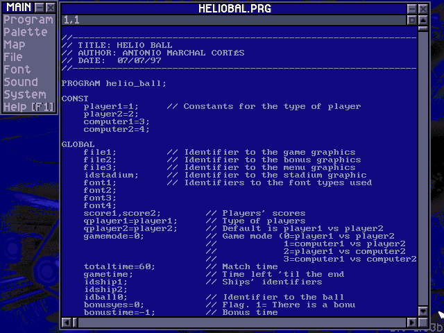
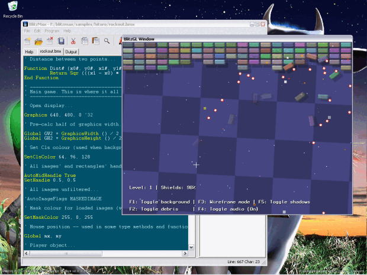
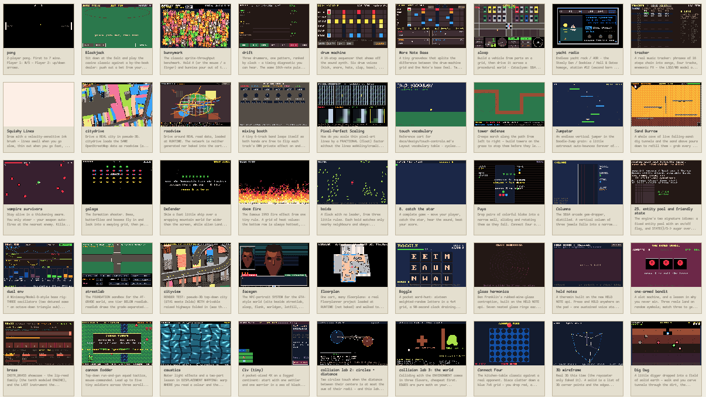
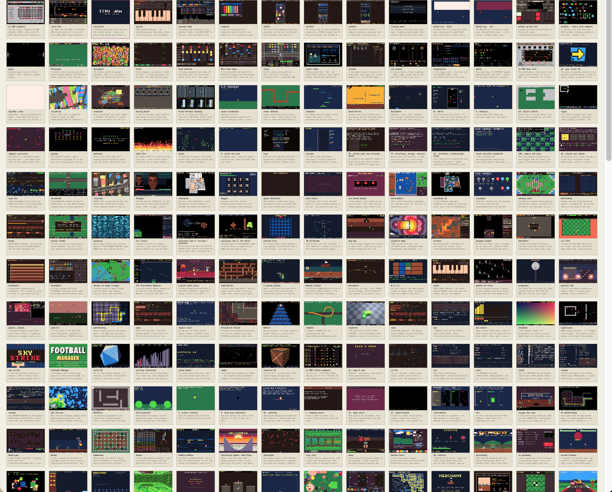

How I learned programming, twice
When I first learned programming there was no internet to speak of at our place. Haha what am i saying, we had green terminal machines in the public library and i had an old 8086 XT dos machine with an amber screen, internet was something the military only had in some form. Then you did have these GW-basic listings in magazines, pages of code that you typed over, and if you were lucky the thing actually ran afterwards.


Later, when I learned programming again and when i did have access to internet at some places (not at home though), you had these lovely all-in-one packages. DIV Games Studio and later BlitzMax. Code, sprites, sound, run, all in one place. Especially true with div game studio, you never really had to leave them, documentation, sprite editor, all in one happy little package on your glaring CRT monitor.


I loved those. Apparently way more than I realized. Nostalgia in the making.
Then the boys came home from school
Much later, 20 years or so, sheesh, my boys came back from school. They had done a project there, writing a small game in Scratch. I know Scratch, I have looked at it now and then over the years, never really used it. But almighty, what a slow thing. We have these big fast machines now, and at the end of it all it can barely push a decent framerate. This silly orange cat is moving along like it's 1989 again all over. And those blocks you write code with, I am sure the education people have thought hard about them, I mean i understand it kinda looks like functions but it just didn't feel right to me.
So I thought: I am going to build a little C game library for my kids.
Well, that ballooned and spiraled a bit, and here we are. To be honest its less a tool for my kids and more a tool for my own nostalgia, but yeah here we are.
What it is now
It is called dreamengine and it is a fantasy console: a small computer that never existed. A low-res screen (320×200), 32 colors, 8 sound voices, a chunky 8×8 font. Code editor, sprite editor, map editor and sound all live in one window, like those old packages did. You write C, real honest C, you hit run, and there is your game.

The cartridges are my favourite part: a cart is just a PNG image with the whole game hidden inside it. The picture you see is the screenshot, the source code is in there too. You can save one, mail it to someone, and it still works.
Who is it for
Me. I planned on making it a pre-teen learning device or something, not really happening as of yet, they play the carts though, little games, toys, drum machines, radios that play themselves, Oh and that rollercoaster game i mentioned in another post but redone for this console.

You can play a bunch of them in your browser over here: dreamengine gallery.
Let's see where this goes, Have a good day!